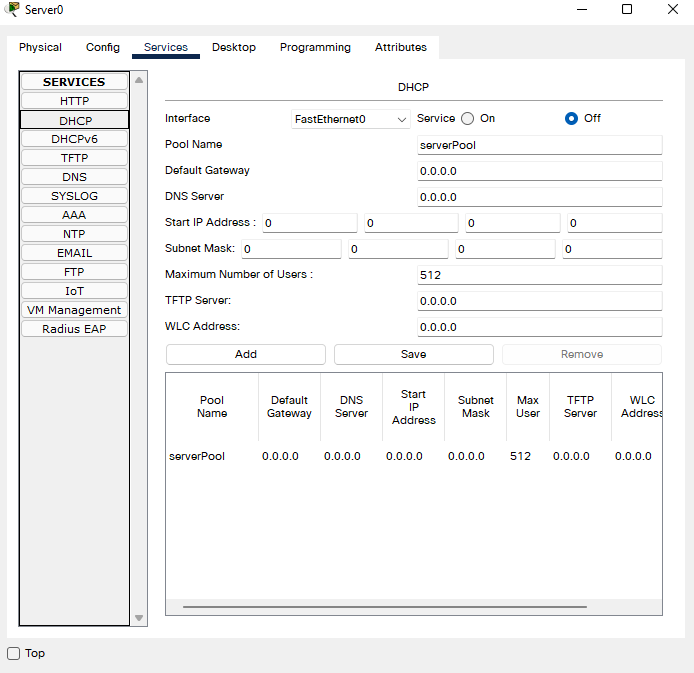
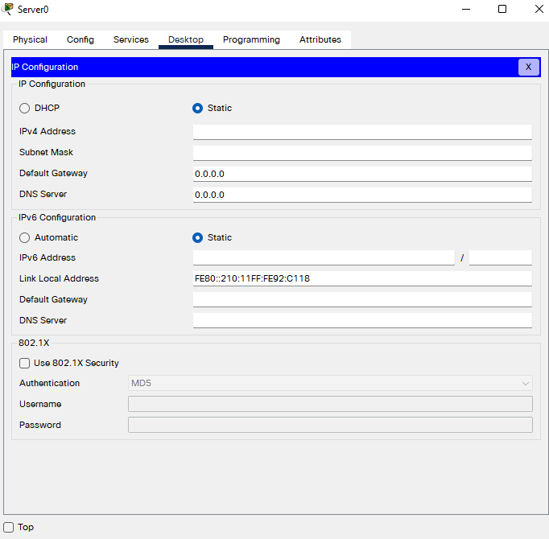
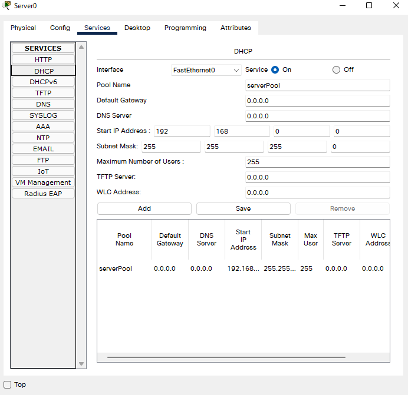

Szerveren kerüsztül IP cím generálás
Szerver felület megnyitásával belépsz az *Asztalra (Desktop)* menj a *IP Configuration* programba és adj meg neki egy IP-címet amit a Static ponton belül az IPv4 címnél tudsz megadni.
|  |  |
|---|
Static IP
Amikor Static módban adod meg az IP-címet olyankor az adott eszköznek adsz egy fix IP-t.
DHCP
Ha végponti eszközöknek ki szeretnél osztani saját IP-címet, akkor miután adtál a szerverednek egy Static IP-címet akkor a szerver felület megnyitásával belépsz a Services menü pontba és azon belül a baloldali listán rá nyomsz a DHPC-re. A legfontosabb, hogy a Service-t kapcsold be. A Start IP adress sorban a negyedik számot megváltoztatva meg tudod adni az eszlözeidnek mivel kezdjék az IP-címüket, hogy meg is határozd mennyi legyen a maximum felhasználó ezen a hálózaton akkor a Maximum Number of Users sorban megtudod adni.
Ha DHCP-n osztasz ki IP-címet azt egy hálozaton belül tudod lekérni egy szervertől vagy switchtől, vagy sohoroutertől és ő kiosztja utána a hálózaton belüli végponti eszközöknek az IP-címeket.
|  |
|---|
{kind=link}